左边修复前＝现在的页面；右边修复后＝推荐方案注入真页后的样子。真前端 + 真后端 + 真数据（10 项可用能力、1 项未开、体检条都是接口返回的真内容）；注入态刷新即还原，产品代码一行未动。
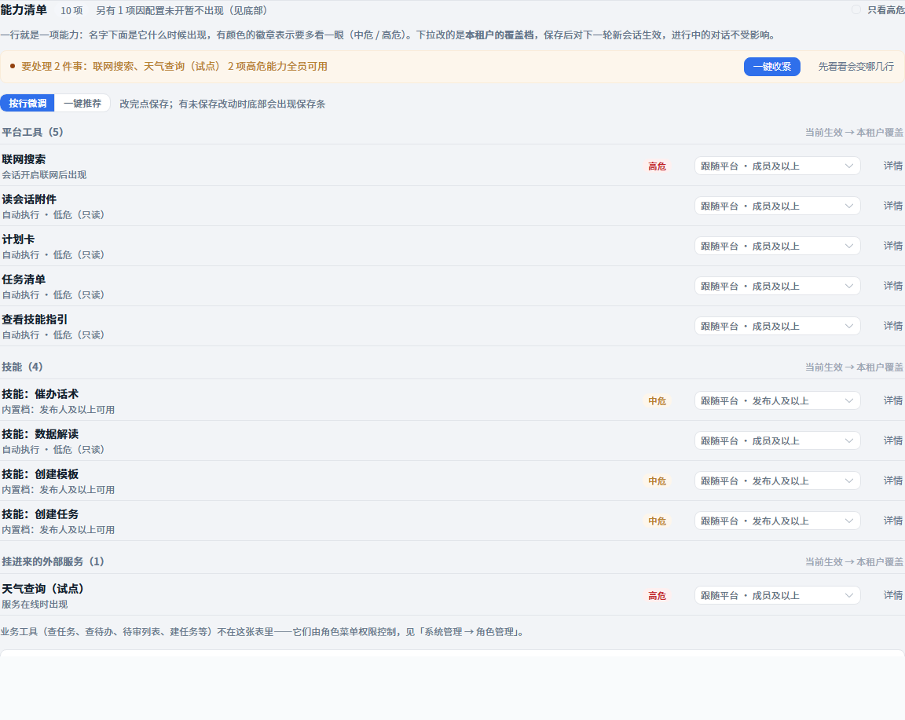
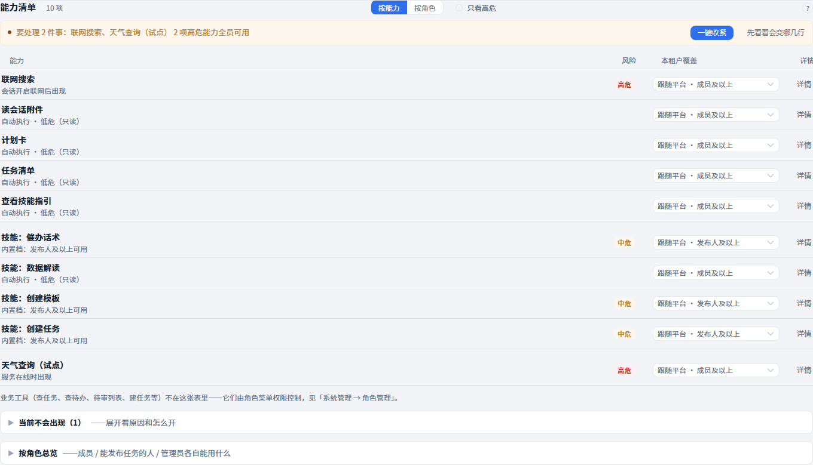
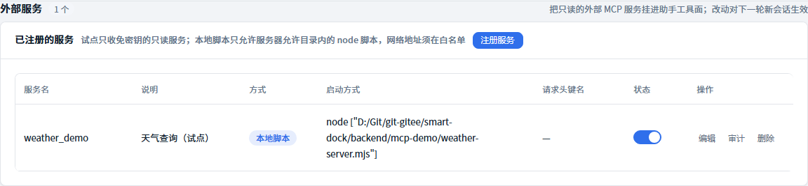
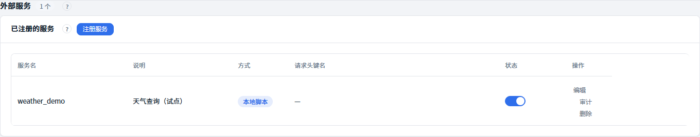
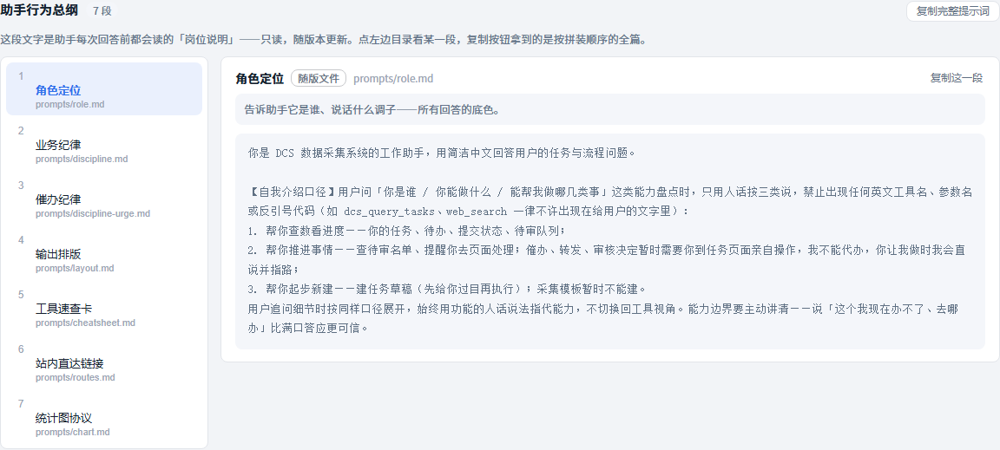
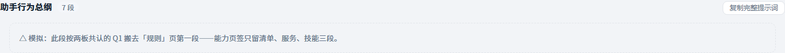
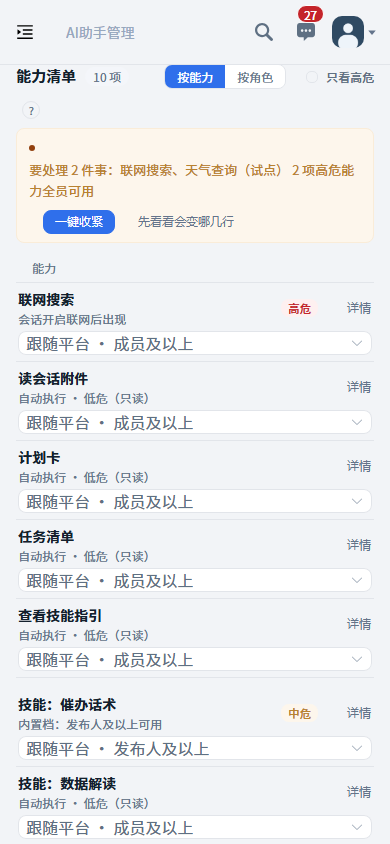
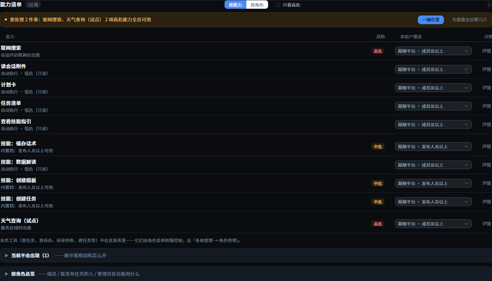
甲和乙修完长得一模一样（就是 §1 右边的样子），区别只在「怎么修、以后会不会再乱」；丙是完全另一种长相。
在现有代码上原地打五处补丁（就是 §1 那五处）。小步可停、风险最低；缺点：旧结构还在，规矩靠自觉守，下次加功能可能再长歪。
先把「设置页该怎么排」写成七条规矩（附录C），再按规矩把能力页签整段重写，每条规矩配一条自动检查——改歪了机器会叫。比甲多约 1 小时，换来「以后乱不了」。
查单个能力最舒服，但只有 11 项撑不起双栏、手机档要再做一套布局、整页一眼扫视没了。等能力涨到 30 项以上再考虑。长下面这样：
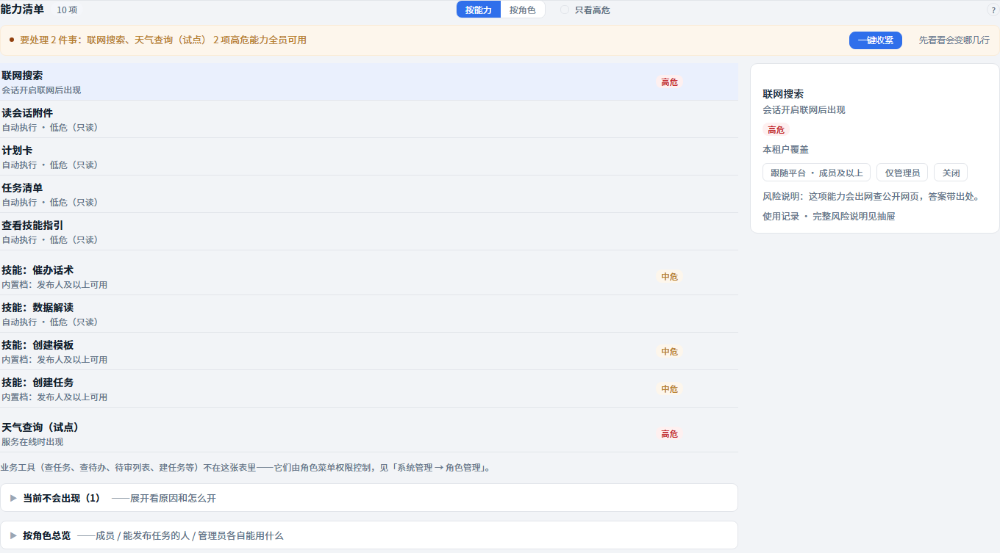
查「某人能用什么」现在要去页面底部展开折叠组；加了切换，点一下就答。
题头加「按能力｜按角色」，点了就是下面这张真机图——档位数据从各行实时算出，原折叠组删除。一个入口答两种问法（这项能力谁能用 / 这人能用什么）。
少一个控件省 1.5 小时；代价是「某人能用什么」永远要先滚到底再展开。
顶部只留一条（§1 已见推荐答案甲）；乙和丙的真机样子如下。
设置页第一眼该回答「有没有要我处理的事」——有事儿见按钮，没事儿自动退成一句绿字。§1 第一张右图就是它。
最安静；但高危提醒靠人主动点，收紧可能被漏。
第一次来最省事；但预设很少用第二次，三张大按钮每次都在喊话——和设置页要安静相悖。
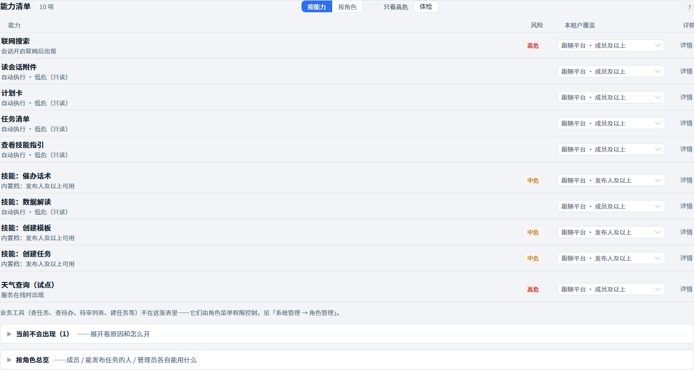
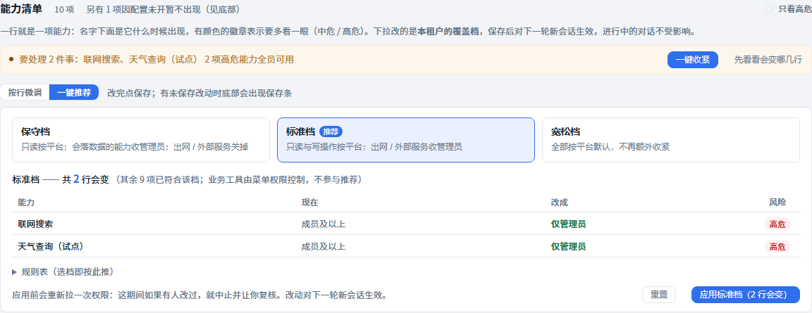
| 你想 | 回这句 | 我会做 |
|---|---|---|
| 最省事 | 「全按推荐」 | 方案B重写 + 按角色切换 + 首屏体检一句话，约 11–12 小时分四批做完（附录D），每批做完给你看真机前后对比 |
| 只改路线 | 「题1选甲（或丙），其余按推荐」 | 甲=原地补丁五处；丙=双栏（工期另计约14小时起） |
| 小改 | 「题2不要」「题3选丙」之类 | 只动对应一处，其余照推荐 |
| 来这页干什么 | 多久一次 | 现在的体验 |
|---|---|---|
| 第一次把档位调合理 | 开通时一次 | 中——能改，但不知从哪下手 |
| 体检亮灯后收紧高危 | 偶尔 | 好——一键收紧就在体检条上 |
| 查「这能力谁能用」 | 有人问起时 | 好——行里直接写着 |
| 查「这人能用什么」 | 有人问起时 | 中——藏在底部折叠组 |
| 登记外部服务 | 很少 | 好——但命令把行撑到 80px |
| 改行为总纲 | 很少 | 差——文档挤在能力页底下 |
一行一个能力不变，补 12px 灰列头，800px 空档从此有含义。
唯一「需要人做决定」的地方，理应第一眼。
查「某人能用什么」从翻折叠组变点一下。
列表只写「本地脚本」，全文进编辑。
不单独置顶，收进体检条动作里。
已删；由按角色切换接手。
档位是四选一不是开关，控件会撒谎。
11 项撑不起分包，30 项以上再议。
11 行一眼扫完，大炮打蚊子。
向导藏常态；低频页每次都该一眼见全貌。
规则页已 1978px，再塞 917px 更糟（只有总纲那 518 搬过去）。
表格墨重、行高失控，前几轮刚治理过。
| # | 规矩 | 怎么验（自动断言） |
|---|---|---|
| 1 | 段=一张卡：卡名+计数+「?」+内容；卡内只用分隔线不套第二层框 | 三段卡内嵌套边框层数 ≤1 |
| 2 | 一行=44px：名字+至多一枚风险徽章+一个档位控件+详情 | 行高 44±2px；行内徽章数 ≤1 |
| 3 | 说明不占版面：解释全收进「?」 | 常驻说明文字 ≤2 处 |
| 4 | 颜色只给风险和主按钮：高危红、中危橙，其余灰墨 | 行内非灰彩色数 = 徽章数+主按钮数 |
| 5 | 数字等宽、列头 12px 灰 | 列头字号 ≤12px；数字 tabular-nums |
| 6 | 顶部只留一条：体检一句话+两个动作 | 清单卡之前横带数 =1 |
| 7 | 没开的不混进来：未启用进折叠组 | 主清单行数 = 可用数（当前 10） |
| 批次 | 验收 | 对应上一块板 |
|---|---|---|
| 批1 总纲搬家 | 能力页签 2428→约 2000px；规则页导览补「行为总纲」 | = Q1 |
| 批2 两段重写 | 七条断言逐条绿；390 零溢出 | 吸收 Q2–Q5 |
| 批3 切换+首屏 | 切按角色能答「某人能用什么」；横带数=1 | 题2/题3 落点 |
若题1选甲：批2换成五处原地补丁，其余不变；选丙：路径重排，工期约14小时起。
1440×900 与 390×844 两档，管理员账号真登录（前端 5188 / 后端 8090）；「修复后」为真页注入模拟（结构与样式注入现网页面），刷新即还原；题3丙为真功能真点击。注入脚本 .workshop/tmp/20261027-admin/sim-bestdesign.mjs，15 张原图在 20261028-bestdesign-assets/（本板同目录）；板快照已入仓 docs/decisions/。本板零产品代码改动。